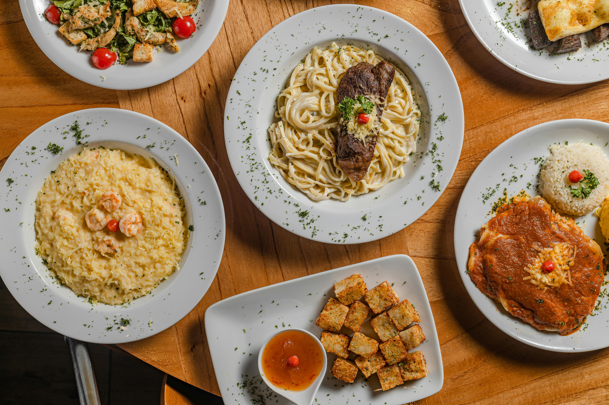

Caesar Pasta
Odin Recipes

Description
A simple recipe for a chicken Caesar pasta Salad! You can try doing this
recipe at home even if you are a beginner in cooking. It's perfect for
using leftover chicken and having some health pasta.
Ingredients
- 3 cups bow tie pasta
- 2 skinless, boneless chicken breasts
- 1 Caesar salad kit, any brand
- salta and freshly black pepper to taste
Steps
-
Step 1: Bring a large pot of salted water to a
boil; add pasta and cook until tender with a bite, 8 to 10 minutes.
Drain, rinse with cold water, drain again, and set aside to cool.
-
Step 2: Heat a nonstick skillet over medium-high
heat, and cook chicken for 4 minutes; flip and cook until no longer
pink at the center and juices run clear, 3 to 4 minutes more.
Let chicken rest for 5 minutes, then chop into bite-sized pieces.
-
Step 3: Add bow ties, chicken, Caesar salad kit
(with all enclosed dressing, bacon, Parmesan, and crouton packets)
to a large bowl. Gently toss until everything is coated with
dressing. Serve immediately.